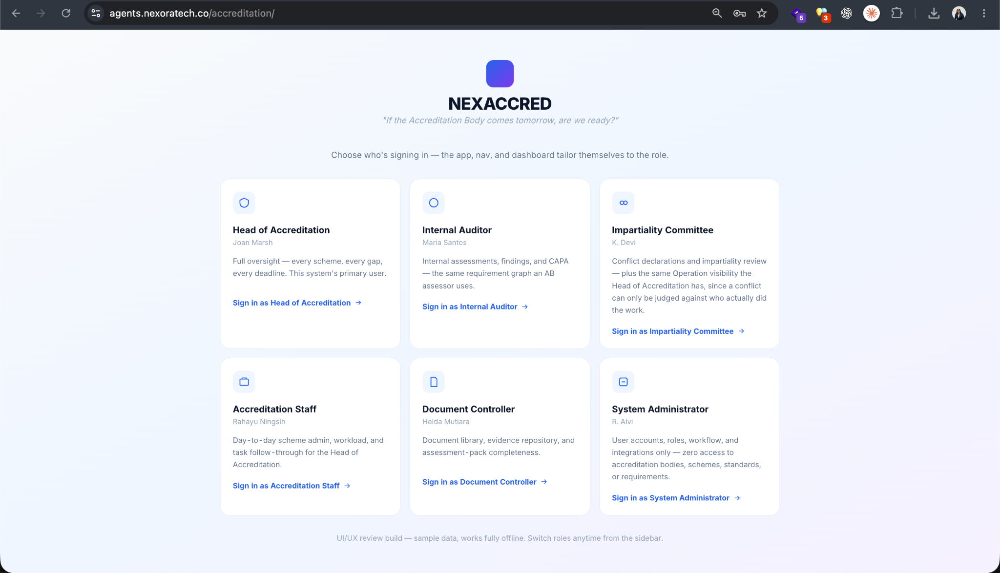
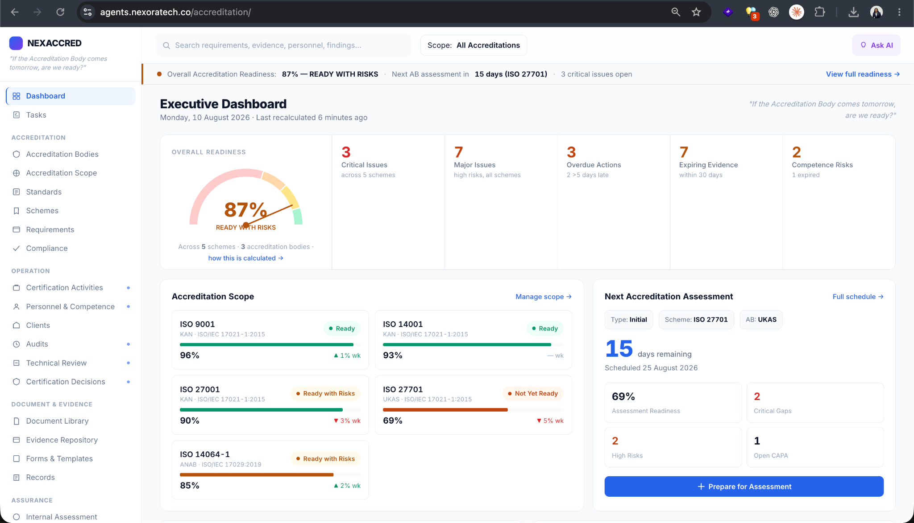

NEXACCRED Requirement Review Review environmentPrototype v0.1.0-reviewBaseline: Not approved

Review surface · Role selection

Review surface · Head of Accreditation · Executive Dashboard
Prototype behavior: click the Head of Accreditation card to enter the dashboard. On the dashboard, click Ask AI, the Overall Readiness 87% panel, or the Next Accreditation Assessment panel. The embedded assistant simulates contextual Q&A, requirement-gap capture, evidence logs, readiness gate, version-specific sign-off, and post-baseline change control. This is a static UX prototype; it is not connected to the production backend, LLM, or accreditation data.